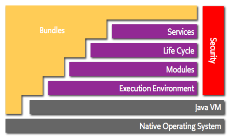
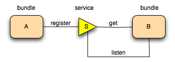

OSGi Overview
Introduction
openHAB is being based on OSGi and understanding of OSGi modular architecture is very important. This page is aimed to help developers, that are going to use OSGi for the first time and contains a basic overview of the OSGi technology.
Concepts
As described in the OSGi architecture page, OSGi is a set of specifications that define a dynamic component system for Java. These specifications enable a development model, where applications are dynamically composed of many different reusable components. The OSGi specifications enable components to hide their implementations from other components while communicating through services, which are objects that are specifically shared between components. This architecture significantly reduces the overall complexity of building, maintaining and deploying applications.
Key features of OSGi are:
- Modularity - it is realized with the bundle concept;
- Runtime Dynamics - software components can be managed at runtime;
- Service Orientation - components communicate between each other through services.
Layering
The OSGi framework consist of several layers build on top of each other (See Fig. 1):
- Module Layer - it is responsible for managing dependencies between bundles and for class loading (See Bundles Section);
- Life Cycle Layer - controls the lifecycle of the bundles (See Lifecycle Section);
- Service Layer - defines a dynamic model (publish/find/bind) of communication between different modules (See Services Section);
- Actual Services (Bundles on Fig.1) - this is the application layer, using all other layers;
- Security Layer - optional layer, based on the Java 2 security architecture, that manages permissions for different modules.

Fig.1 OSGi Layering (Source:https://www.osgi.org/wp-content/uploads/layering-osgi.png)
{kind=link}
More details about the OSGi architecture can be found at https://www.osgi.org/developer/architecture/
Bundles
Modules (called bundles) are the smallest unit of modularization. Technically a bundle is a JAR file with additional meta information. This information is stored in file called manifest file. The manifest file is part of the standard Java specification, but OSGi adds additional metadata to it in form of specific headers. The Bundle-SymbolicName and the Bundle-Version headers uniquely identify a bundle. In OSGi is allowed to have bundles with same name, but different version running at the same time.
Some of the most important information that the manifest contains are the bundle dependencies. A bundle can depend on another bundle or on a package. Preferred way to define dependencies in a bundle is with Import-Package and Export-Package headers and not with Require-Bundle header. This gives you an access only to the packages that you need and allows you to exchange the packages at a later point in time. You can find more information in Why using Require-Bundle is a bad practice and should be avoided.
The OSGi runtime uses the information about the dependencies to wire the bundles and hides everything in this JAR unless it is explicitly exported. The dependencies to the Java standard libraries are managed by the Bundle-RequiredExecutionEnvironment header, so it is not needed to import the Java core packages.
A simple manifest file can have the following content:
Manifest-Version: 1.0
Bundle-ManifestVersion: 2
Bundle-Name: Example Plug-in
Bundle-SymbolicName: com.example.myosgi; singleton:=true
Bundle-Version: 1.0.0
Bundle-RequiredExecutionEnvironment: JavaSE-1.7
Import-Package: org.example.required
Export-Package: org.example.provided
OSGi Service Platform Core Specification, Chapter 3.5 contains detailed information about the Module Layer and description of the headers (Manifest-Version, Bundle-ManifestVersion, Bundle-Name) used in this example.
Bundles are used often to register and consume services. You will find more information about that in the Services section.
Lifecycle
OSGi is a dynamic platform. That means that bundles may be installed, uninstalled, started, stopped or updated at runtime (See Table 1). The OSGi specification defines a mechanism how to manage the dependencies between the bundles and the functionality that they provide. This is achieved with the help of the lifecycle concept.
The framework introduces a different states, transitions between these states and rules how this states are affecting the packages exported by the bundle and the services, that it provides. The table below shows the possible states of an OSGi bundle with a short explanation:
| Status | Description |
|---|---|
| INSTALLED | The bundle has been installed into the OSGi container, but some of it’s dependencies are still not resolved. The bundle requires packages that have not been exported by any other bundle. |
| RESOLVED | The bundle is installed and the all the dependencies at a class level are resolved and wired. The bundle can export the packages, that it provides. |
| STARTING | A temporary state that the bundle goes through while the bundle is starting, after all dependencies have been resolved. The bundle is permitted to register services. |
| ACTIVE | The bundle is running |
| STOPPING | A temporary state that the bundle goes through while the bundle is stopping |
| UNINSTALLED | The bundle has been removed from the OSGi container. |
Table 1 Bundle states description
The possible status transitions are shown in the state diagram below:

Fig.2 Bundle State diagram
Services
Another main concept, that allows the bundles to communicate between each other, is the service model.
In OSGi, a bundle can register a service in a central service registry under one ore more service interface. Published services also have service properties associated with them in the registry. It is an important feature of OSGi, because it provides a central place to register and get services. A bundle is permitted to register service objects at any time during the STARTING, ACTIVE or STOPPING states. Other bundles can go the registry and list all objects, that are registered under a specific interface or class.
A bundle can therefore register a service, it can get a service and it can track for appearing and disappearing of service. Any number of bundles can register the same service type and any number of bundles can get the same service. A simple diagram of the service usage and tracking is shown on Fig. 3.

Fig.3 OSGi Services (Source: https://www.osgi.org/wp-content/uploads/services.png)
{kind=link}
Popular OSGi Containers
We have talked so far about the OSGi specification. Here is the place to emphasize that the different containers might implement different parts of the OSGi specifications and might provide slightly different API (which could make the bundle not fully portable between different containers).
We will list the most popular OSGi containers with a short description of their goals. We can divide them into:
- open source:
- Equinox - this is the reference implementation of the OSGi R4.x Core Specification and one of the mostly used. As it is used in the openHAB project, we have prepared a wiki page;
- Apache Felix - implements OSGi R5 Core Specification, developed by the Apache Software Foundation. Apache Karaf is distribution based on Apache Felix that provides some additional features on top of it (e.g. folder based hot deployment, improved default console with remote SSH, maven plugins and others);
- Concierge - implements OSGi R5 Core Specification and is aimed at mobile and embedded devices. With a size of around 250 kb it has the smallest footprint of the presented containers;
- commercial:
- ProSyst OSGi Framework - implements OSGi R5 Core and Compendium Specification. This implementation is low-footprint, optimized for embedded products, provides custom remote management agent and many more additional components.
Important Definitions
bundle - a unit of modularization, defined by the OSGi framework. A bundle is comprised of Java classes and other resources, which together can provide functions to end users. For more detailed definition - OSGi Service Platform Core Specification, Chapter 3.2
service - any object that is registered in the OSGi Service Registry and can be looked up using its interface name(s). Definition - OSGi Service Platform Core Specification, Chapter 5.1
manifest - descriptive information about the bundle, contained in its JAR file
Service Registry - enables a bundle to publish objects to a shared registry, advertised via a given set of Java interfaces.
Further Reading
- OSGi Service Platform Core Specification, Version 4.2
- OSGi For Eclipse Developers - only the presentation materials
- OSGi For Eclipse Developers - video
- OSGi API
- OSGi Vogella guide
- OSGi Framework Architecture – Three Conceptual Layers
- OSGi in action, Creating Modular Applications in Java
- Lifecycle of a bundle
- OSGi enRoute
- https://www.osgi.org/developer/where-to-start/